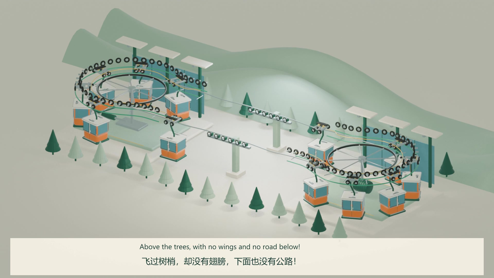

SCIENCE IN MOTION · 科普视频
看见科学，
一步步发生。
不是再读一遍知识。
让变化慢下来，跟着它找出原因。

主推荐 / 完整 3D 双语片 · 5–8 岁
索道小探险
飞过树梢，却没有翅膀。
从绳索怎样前进，到车站和安全保障，
跟随同一台吊厢，走完一段完整旅程。
9 分 57.5 秒 · 104 组双语字幕
中文 / English 配音随时切换
中英双语 · 可暂停、拖动、逐段观察。完整片点击播放才加载媒体，离线播放器须主动下载。